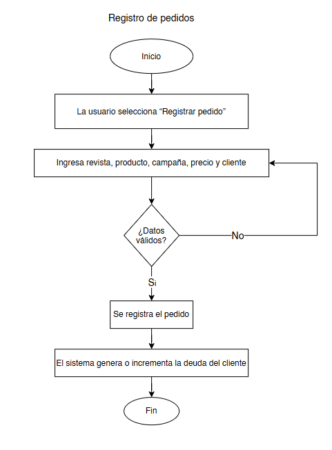
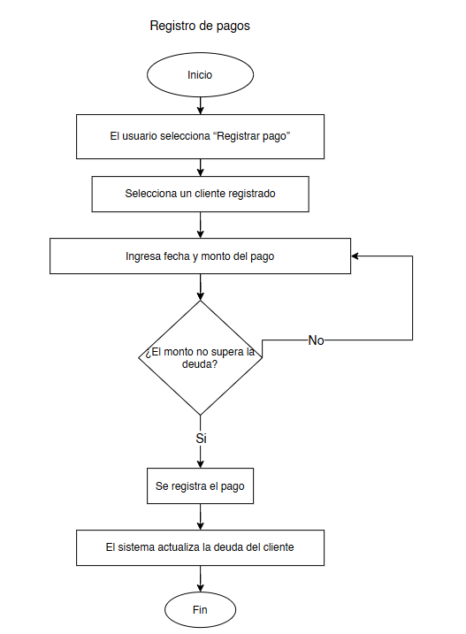
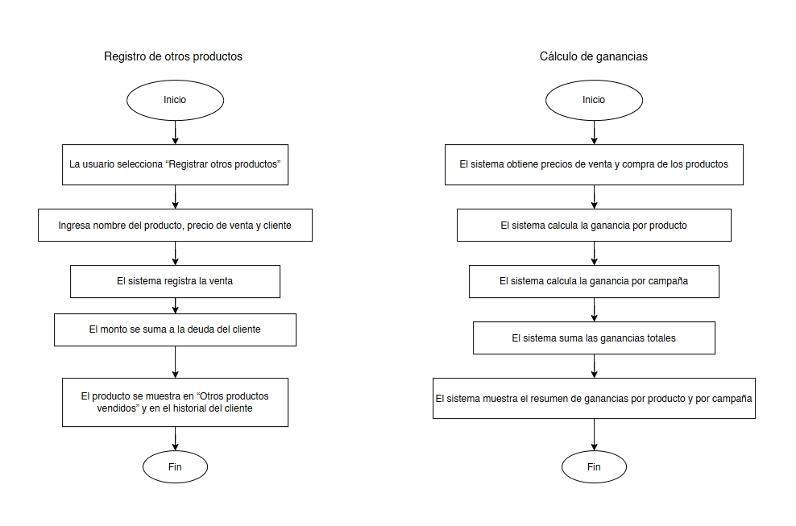
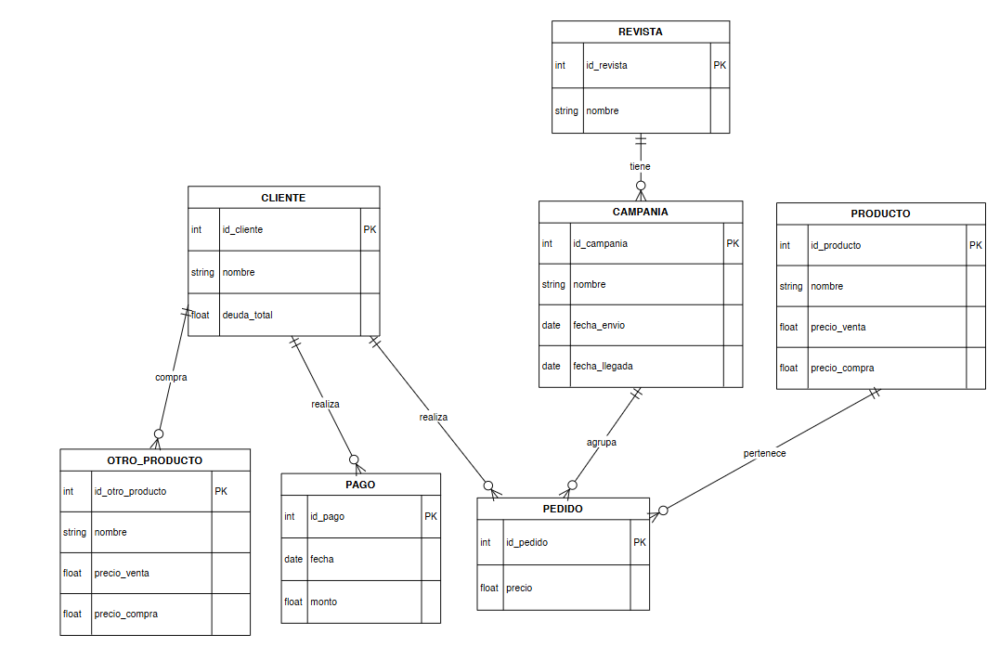
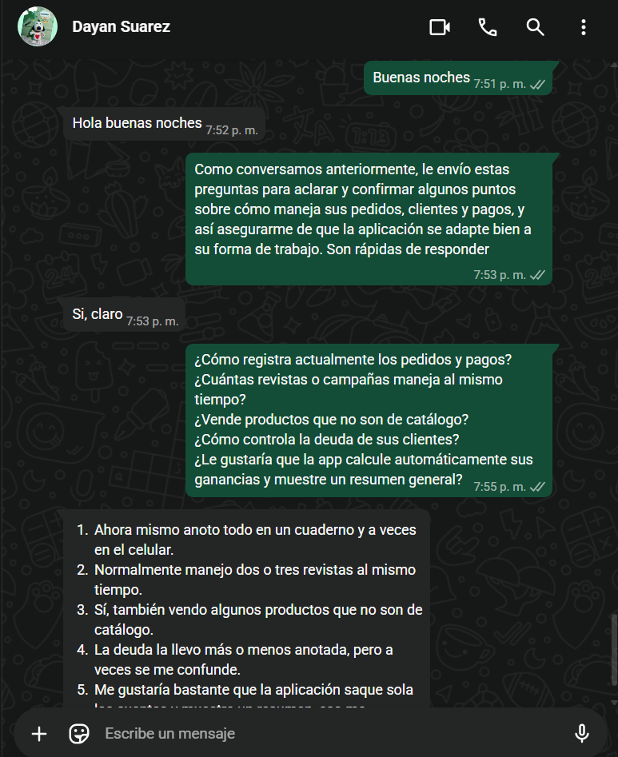
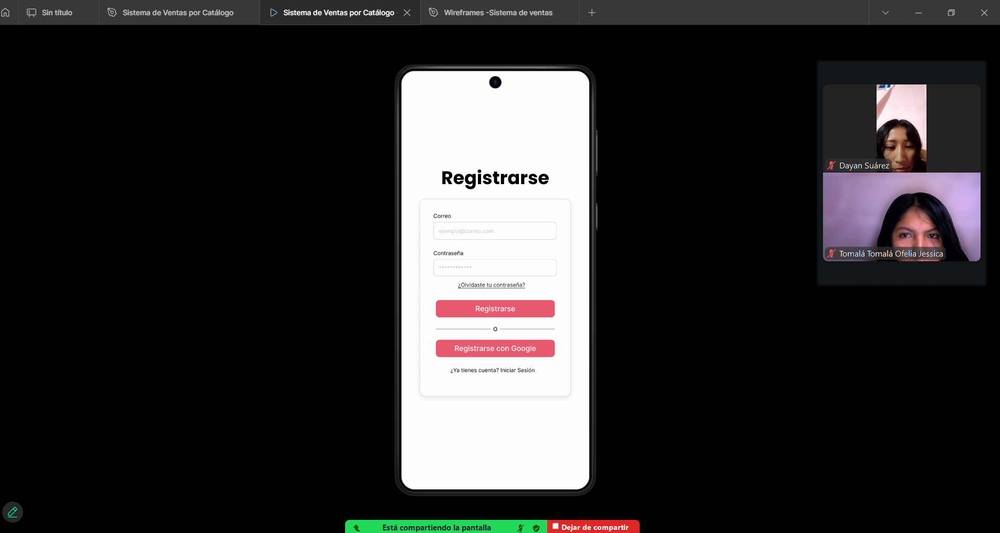
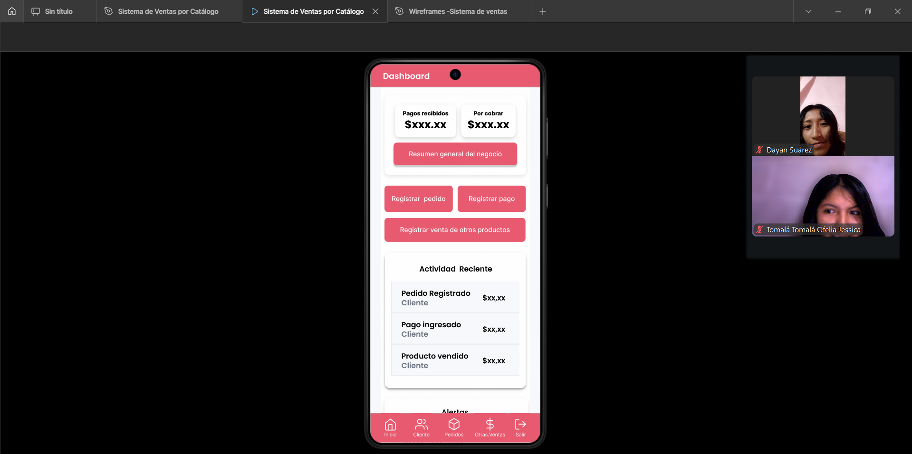
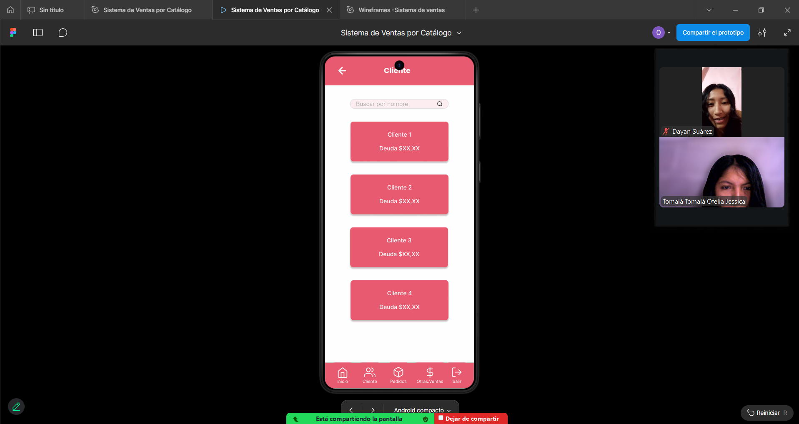

Diagramas
Diagrama de flujo



Diagrama de casos de uso

Diagrama de entidad-relacion

En esta fase se realizo el primer acercamiento con la persona interesada en el sistema, con el objetivo de comprender el contexto general del negocio de venta por catálogo y la problemática existente en el manejo manual de pedidos, pagos y deudas.
El cliente es una vendedora de productos por catálogo que necesita una aplicación móvil para organizar y controlar sus pedidos, clientes, pagos, campañas y ganancias. La necesita porque actualmente maneja esta información de forma manual, lo que le genera confusión, errores en el cálculo de deudas y pérdida de tiempo al momento de revisar sus ventas.
Se realizaron las siguientes preguntase para comprender mejor las necesidades del cliente:
1. ¿Cómo registra actualmente los pedidos y pagos?
2. ¿Cuántas revistas o campañas maneja al mismo tiempo?
3. ¿Vende productos que no son de catálogo?
4. ¿Cómo controla la deuda de sus clientes?
5. ¿Le gustaría que la app calcule automáticamente sus ganancias y muestre un resumen
general?
A partir de la información obtenida, se procedió a recopilar los requisitos del sistema, definiendo claramente qué funcionalidades debía incluir la aplicación para cubrir las necesidades de la cliente.
Se identificó un único tipo de usuario:
Vendedora: Quien será la encargada de registrar
pedidos, pagos, productos, consultar información y visualizar reportes
Funciones principales:
🟢 Registrar pedidos
🟢 Registrar pagos
🟢 Registrar otros productos vendidos
🟢 Gestionar clientes
🟢 Gestionar revistas y campañas
🟢 Visualizar resumen de ganancias
Funciones secundarias:
🟢 Consultar actividad reciente
🟢 Visualizar alertas del sistema
🟢 Consultar pedidos por revista y campaña
🟢 Consultar deuda de clientes
Se definieron las siguientes pantallas:
🟢 Dashboard (Inicio)
🟢 Registro de pedidos
🟢 Registro de pagos
🟢 Registro de otros productos
🟢 Revistas y campañas
🟢 Clientes y detalle de deuda
🟢 Otros productos vendidos
🟢 Resumen de ganancias
El sistema almacenará información relacionada con:
🟢 Clientes
🟢 Productos
🟢 Revistas
🟢 Campañas
🟢 Pedidos
🟢 Pagos
🟢 Otros productos vendidos
🟢 Ganancias y deudas
Estos datos se estructuran en el diagrama entidad–relación del sistema.
Se definieron las siguientes restricciones:
🟢 Solo se pueden eliminar clientes cuando su deuda sea cero.
🟢 Las fechas de envío y llegada de campañas son opcionales.
🟢 Los pagos no pueden superar la deuda del cliente.
🟢 La ganancia se calcula automáticamente por el sistema.
El análisis del negocio de venta por catálogo permitió identificar problemas como la falta de organización de la información, inconsistencias en el cálculo de deudas y ganancias, y dificultad para acceder a registros históricos. Estas situaciones se deben al manejo manual de los registros, lo que genera desorganización y posibles inconsistencias. El sistema propuesto soluciona estos problemas mediante la automatización de los procesos y la centralización de la información, facilitando una gestión más eficiente y confiable del negocio.
Se definieron reglas claras, entre ellas:
🟢 Cada pedido genera deuda.
🟢 Cada pago reduce la deuda.
🟢 Los productos fuera de catálogo también generan deuda.
🟢 La ganancia se obtiene de la diferencia entre precio de venta y precio de compra.
Se elaboraron diagramas de flujo para representar:
🟢 Registro de pedidos
🟢 Registro de pagos
🟢 Cálculo de ganancias
🟢 Actualización de deudas
Actor: Vendedora
Descripción:Permite registrar un pedido realizado desde una revista y campaña
específica.
Flujo principal:
1. La vendedora selecciona “Registrar pedido”.
2. Ingresa revista, producto, campaña, precio y cliente.
3. El sistema valida los datos.
4. El sistema registra el pedido.
5. El sistema suma el valor a la deuda del cliente.
Resultado:Pedido registrado y deuda del cliente actualizada.
Actor: Vendedora
Descripción: Permite registrar un pago realizado por un cliente.
Flujo principal:
1. La vendedora selecciona “Registrar pago”.
2. Selecciona un cliente.
3. Ingresa fecha y monto del pago.
4. El sistema valida que el pago no supere la deuda.
5. El sistema registra el pago.
6. El sistema reduce la deuda del cliente.
Resultado: Pago registrado y deuda actualizada.
Actor: Vendedora
Descripción: Permite registrar productos vendidos que no pertenecen a revistas.
Flujo principal:
1. La vendedora selecciona “Registrar otros productos vendidos”.
2. Ingresa nombre del producto, precio y cliente.
3. El sistema registra la venta.
4. El sistema suma el valor a la deuda del cliente.
Resultado: Producto registrado y deuda
actualizada.
Actor: Vendedora
Descripción: Permite visualizar, administrar y eliminar clientes sin deuda.
Flujo principal:
1. La vendedora accede a “Clientes”.
2. El sistema muestra la lista de clientes.
3. Selecciona un cliente para ver detalles.
4. Si la deuda es cero, el sistema permite eliminarlo.
Resultado:Clientes gestionados correctamente.
Actor: Vendedora
Descripción: Permite visualizar la deuda total y pagos de un cliente.
Flujo principal:
1. La vendedora selecciona un cliente.
2.El sistema muestra productos, campañas, pagos y deuda total.
Resultado: Estado financiero del cliente visualizado.
Actor: Vendedora
Descripción: Permite registrar y consultar revistas y sus campañas.
Flujo principal:
1. La vendedora accede a “Revistas”.
2. Registra o selecciona una revista.
3. El sistema muestra las campañas asociadas.
Resultado:Revistas y campañas organizadas.
Actor: Vendedora
Descripción: Permite visualizar los pedidos organizados por revista y campaña.
Flujo principal:
1. La vendedora selecciona una revista.
2. Selecciona una campaña.
3. El sistema muestra los pedidos, totales y fechas opcionales.
Resultado: Pedidos visualizados por revista y campaña.
Actor: Vendedora
Descripción: Permite visualizar productos que no pertenecen a catálogos.
Flujo principal:
1. La vendedora accede a “Otros productos vendidos”.
2. El sistema muestra producto, cliente, precio, costo y ganancia.
Resultado: Listado de productos adicionales visualizado.
Actor: Vendedora
Descripción: Permite visualizar las ganancias del negocio.
Flujo principal:
1. La vendedora accede al “Resumen de ganancias”.
2.El sistema obtiene precios de compra y venta.
3. Calcula ganancia por producto.
4. Calcula ganancia por campaña.
5. Suma las ganancias totales.
6. Muestra el resumen.
Resultado:Resumen de ganancias mostrado correctamente.




Se elaboraron wireframes que representan la estructura de cada pantalla, permitiendo definir la ubicación de botones, formularios, tablas e información antes del diseño visual final.
| Uso | Color | Hex |
|---|---|---|
| Fondo principal | Blanco suave | #F8F9FC |
| Fondo de tarjetas | Blanco | #FFFFFF |
| Color primario (botones) | Rosa coral | #E85A70 |
| Secundario | Morado suave | #6C63FF |
| Texto principal | Gris oscuro | #2E2E2E |
| Texto secundario | Gris medio | #6B7280 |
| Éxito / ganancias | Verde | #2ECC71 |
| Advertencia / deuda | Rojo suave | #E74C3C |
🟢Título principal / encabezados: Poppins Bold o Inter SemiBold
🟢Textos: Inter Regular
🟢Botones y llamadas a la acción: Inter Medium o Poppins Medium
Los botones tienen bordes redondeados y colores definidos según su función.
Iconos:Se incorporaron iconos simples en el menú lateral y barras de navegación para mejorar la usabilidad y hacer la interfaz más intuitiva, ayudando a identificar rápidamente las secciones.
Espaciado y Organización:El diseño mantiene un espaciado uniforme entre secciones, tarjetas y botones, logrando una apariencia ordenada, limpia y fácil de navegar, especialmente en pantallas pequeñas.
1. Pantalla de Inicio de Sesión
Campos: Correo, Contraseña.
Opciones: Iniciar sesión, ¿Olvidaste tu contraseña?, Registrarse, Iniciar sesión con Google.
2. Pantalla de Registro
Campos: Correo, Contraseña.
Opciones: Registrarse, ¿Olvidaste tu contraseña?, Iniciar sesión con Google, Enlace para iniciar
sesión si ya tiene cuenta.
3. Dashboard (Resumen General)
Muestra métricas clave como: Ganancia total, Número de clientes, Pagos recibidos.
Accesos directos para: Registrar pago, Registrar pedido, Registrar venta de otros productos.
Actividad reciente: pedidos, ventas y pagos.
Alertas y estado: clientes con pagos atrasados, campañas sin fecha, entre otros.
4. Pantalla de Registro de Pedidos
Campos: Producto, Precio, Cliente, Revista, Campaña, Año.
Botones: Guardar, Cerrar.
5. Pantalla de Registro de Pagos
Campos: Monto, Cliente, Fecha.
Información adicional: Deuda actual.
Botones: Guardar, Cerrar.
6. Pantalla de Registro de Venta de Otros Productos
Campos: Producto, Precio de venta, Precio de compra, Cliente.
Botones: Guardar, Cerrar.
7. Pantalla de Clientes
Lista de clientes con información de deuda.
Opciones para buscar cliente.
8. Pantalla de Detalle de Cliente
Pantalla que se abre al hacer clic en un cliente.
Muestra historial detallado de pedidos, pagos y ventas asociadas al cliente.
Detalles de deuda y pagos realizados.
Detalle de pagos realizados y deuda restante.
Opción para eliminar cliente solo si la deuda es 0.
9. Pantalla de Revistas
Lista de revistas disponibles.
Navegación a campañas por revista.
10. Pantalla de Campañas por Revista
Información de campaña: año, precio, total de productos, fechas de envío y llegada, pagos
realizados y ganancia.
Opciones para registrar fecha de envío y llegada, registrar pago
Filtros para campañas.
11. Pantalla de Otros Productos Vendidos
Listado con precios de compra y venta, total de productos y ganancias.
Resumen de total de compras, ventas y ganancia.
12. Pantalla de Resumen General
Resumen completo de ventas, ganancias, pagos recibidos y por cobrar.
Desglose por revista, campañas y otros productos.
Estadísticas adicionales y totales actualizados.
Navegación entre pantallas
Permite moverse entre las distintas pantallas de la aplicación como inicio de sesión, registro,
dashboard, clientes, pedidos, otras ventas y campañas.
Formulario interactivo
Ingreso de datos mediante formularios para registrar pedidos, pagos, ventas de productos, así
como para el registro e inicio de sesión de usuarios.
Selección en listas desplegables
Uso de listas desplegables para seleccionar revista, campaña, año y cliente de forma sencilla y
controlada.
Filtros y búsqueda
Herramientas para buscar clientes por nombre y filtrar campañas según distintos criterios.
Botones con feedback
Botones de acción como guardar, cerrar, registrar y eliminar, con retroalimentación visual para
el usuario.
Alertas o notificaciones
Mensajes informativos sobre el estado de los clientes, alertas de pagos pendientes y campañas
sin fecha registrada.
Tecnología: Android Studio (Java/Kotlin).
Funcionalidad: Interfaz de usuario con pantallas de login, registro,
dashboard, gestión de clientes, pedidos, pagos, campañas y productos.
Validación de datos en el cliente.
Navegación entre pantallas.
Envío y recepción de datos a Firebase.
Notificaciones push mediante Firebase Cloud Messaging (opcional).
Comunicación: Conexión directa con Firebase para autenticación, base de
datos y almacenamiento.
Firebase funciona como un backend completo serverless, integrando varios servicios.
Firebase Authentication: Autenticación de usuarios con correo y contraseña y Google Sign-In, con manejo seguro de sesión y tokens.
Cloud Firestore: Base de datos NoSQL en tiempo real para almacenar usuarios, clientes, pedidos, pagos, campañas y productos, con actualización inmediata en la aplicación.
Firebase Storage: Almacenamiento de archivos multimedia como imágenes de productos, si es necesario.
Firebase Cloud Functions: Funciones en la nube opcionales para lógica de negocio avanzada, validaciones, notificaciones o integraciones.
Firebase Cloud Messaging: Servicio para el envío de notificaciones push a la aplicación.
El usuario interactúa con la aplicación Android desarrollada en Android Studio, la cual se encarga de la interfaz, navegación y validación de datos.
La aplicación se comunica directamente con Firebase, que provee autenticación, base de datos, almacenamiento, funciones en la nube y mensajería.
El usuario abre la aplicación e inicia sesión mediante Firebase Authentication.
La app consulta Cloud Firestore para cargar la información de clientes, pedidos y demás datos.
Al registrar un pedido o un pago, la aplicación guarda la información en Firestore.
Los cambios realizados en Firestore se reflejan en tiempo real dentro de la app.
De forma opcional, Cloud Functions valida información o envía notificaciones cuando se registran nuevos datos.
Escalabilidad: Firebase escala automáticamente sin necesidad de administrar servidores.
Desarrollo rápido: No es necesario crear un backend propio, Firebase provee la infraestructura.
Sincronización en tiempo real: Firestore permite actualización inmediata de los datos.
Seguridad: Firebase Authentication y las reglas de seguridad protegen la información.
Integración sencilla: Android Studio cuenta con SDKs oficiales que facilitan la integración con Firebase.
https://www.figma.com/design/GHkThzNtJ7wTV4QeIeRps3/Sistema-de-Ventas-por-Cat%C3%A1logo?node-id=0-1&t=UM1fXt6hm3tnZ67e-1
https://www.figma.com/proto/GHkThzNtJ7wTV4QeIeRps3/Sistema-de-Ventas-por-Cat%C3%A1logo?node-id=4-1380&p=f&t=oQKm2E6ikN1GF3d7-1&scaling=scale-down&content-scaling=fixed&page-id=0%3A1&starting-point-node-id=4%3A1380&show-proto-sidebar=1
Evidencias de aprobación del cliente (capturas, correos, mensajes)




El cliente aprobo el proyecto durante una reunión de zoom
← Volver al inicio